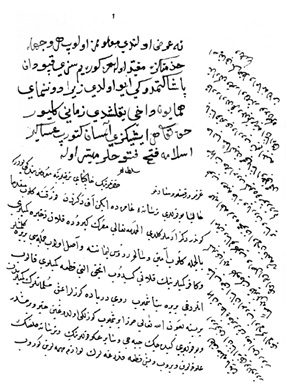

Belge 8: TKSA 7002/34, veziriâzam ‘arzı
Belge 8
Özet:
Mısır’dan gelen zahîre gemileri Rodos’ta, Venedik donanmasında yalnız altı gemileri denizde kaldı, ötekileri gitti, beş kadırga gönderilecek, adalara top ve malzeme Memi Paşazâde Mehmed Paşa ile teslim almak için gönderildi.
H. H. özet:
Kapudân Paşa’nın gitmediği eyi oldu, Donanma-yi Hümâyûn’un gitme zamanı yaklaştı.
Yorum:
Memi Paşazâde Mehmed Paşa’nın Venedik donanmasına karşı donanmanın dönüşü için gönderilmesi: Naîmâ (İpşirli yayını, IV, s. 1678). Memi Paşazâde Mehmed, Kenan Paşa kumandasında Boğaz’da donanmanın bozgunu, 26 Haziran 1656.